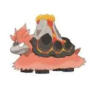

What is Mega Camerupt as a Raid Boss?
Mega Camerupt shows up as a Mega Raid Boss in Pokémon GO. When you defeat it, you’ll get a Camerupt encounter along with Mega Energy needed for its Mega Evolution.
- Appears in Mega Raids
- Rewards include Camerupt encounter and Mega Energy
Why Mega Camerupt Matters
Mega Evolution Unlock
Beating Mega Camerupt is the main way to unlock and build up its Mega Evolution. Once you have enough Mega Energy, you can Mega Evolve it anytime and also register it in your Mega Pokédex.
- Unlocks Mega Camerupt
- Adds entry to Mega Pokédex
- Allows future Mega Evolution use
Raid Team Boost Role
When Mega Evolved, Camerupt can boost certain types in raids, making it useful beyond just catching it.
- Boosts Fire-type attacks
- Boosts Ground-type attacks
Good for Farming
This is one of those Mega Raids you can clear quickly, which makes it useful for farming Mega Energy and rewards without much stress.
- Fast raid completion
- Easy Mega Energy farming
- Good reward efficiency
Beginner-Friendly Raid
Mega Camerupt is often recommended for newer players because the strategy is straightforward and doesn’t require advanced raid planning.
- Clear weakness to Water-types
- Simple team setup
- Helps learn type effectiveness and basic raid mechanics
Difficulty Level
Overall Difficulty: ⭐☆☆☆☆
Why It’s Easy
The biggest reason this raid is easy is its strong weakness to Water-type attacks. Even average Water attackers can deal heavy damage here.
- 2× weakness to Water-types
- High damage even from mid-level Pokémon
Simple Counter Strategy
You don’t need anything complicated here. A solid Water-type team is usually enough to handle it comfortably.
- Kyogre
- Swampert
Team Requirement
| Players | Difficulty |
|---|---|
| Solo | Very Hard |
| Duo | Easy |
| Trio | Very Easy |
| 4+ | Extremely Easy |
What Makes It Slightly Dangerous
Even though this raid is generally easy, there’s still one move you need to watch out for.
Solar Beam
- High-damage charged move
- Can punish Water-type teams if you don’t dodge
It’s not too difficult to handle though — the animation is slow, so most players can react in time.
Best Counters: Primal Kyogre, Mega Swampert, Shadow Kyogre
Tip: Use Water-type moves for maximum damage
Raid Strategy
Focus on Water-type attackers. Dodge charged moves to survive longer.
Best Moves
Origin Pulse, Water Gun, Hydro Cannon are highly effective.
Weather Boost
Rainy weather boosts Water-type moves.
Mega Camerupt Moveset Guide
Fast Moves
Mega Camerupt doesn’t have many Fast Move options, but one clearly performs better in raids.
Fast Moves Table
| Move | Type | Damage | Energy Gain | DPS | Notes |
|---|---|---|---|---|---|
| Ember | Fire | 10 | 10 | Medium | Best option for raids |
| Rock Smash | Fighting | 9 | 7 | Low | Not recommended |
Best Fast Move: Ember — it provides better overall damage flow and pairs well with Camerupt’s Fire-type charged attacks.
Charged Moves
This is where Mega Camerupt does most of its damage, and it has a few strong options depending on the situation.
Charged Moves Table
| Move | Type | Damage | Energy | DPS | Notes |
|---|---|---|---|---|---|
| Overheat | Fire | 160 | 55 | Very High | Strongest Fire-type attack |
| Earth Power | Ground | 100 | 55 | High | Best Ground coverage option |
| Solar Beam | Grass | 180 | 80 | Very High | High damage but slow to use |
| Flamethrower | Fire | 90 | 55 | Balanced | More consistent and safer option |
Best Movesets
For raids, Mega Camerupt is mostly used for damage rather than defense, so your moveset choice should focus on raw output.
- Ember + Overheat → Best Fire-type damage setup
- Ember + Earth Power → Useful for Ground coverage
- Ember + Flamethrower → More stable and forgiving option
Mega Camerupt Raid Moves
When you face Mega Camerupt in raids, it can use the following moves:
Fast Moves (Raid Boss)
| Move | Type |
|---|---|
| Ember | Fire |
| Rock Smash | Fighting |
Charged Moves (Raid Boss)
| Move | Type |
|---|---|
| Overheat | Fire |
| Earth Power | Ground |
| Solar Beam | Grass |
| Flamethrower | Fire |
Moves You Should Watch Out For
Some of Mega Camerupt’s charged moves can be dangerous depending on your team setup.
| Move | Type | Why It Matters |
|---|---|---|
| Solar Beam | Grass | Can heavily damage Water-types like Kyogre |
| Earth Power | Ground | Deals strong neutral damage to many counters |
| Overheat | Fire | High burst damage, especially if not dodged |
Simple Strategy Based on Moveset
- If it has Solar Beam:
- Don’t rely only on Water-types
- Add Rock or Dragon-type counters for safety
- If it has Earth Power:
- Flying-type Pokémon can help reduce pressure
- If it has Overheat:
- Fire-resistant Pokémon perform more consistently
Final Summary
| Category | Best Choice |
|---|---|
| Fast Move | Ember |
| Charged Move | Overheat / Earth Power |
| Biggest Threat | Solar Beam |
| Overall Difficulty | Easy Mega Raid |
Mega Camerupt Performance Guide
PvE (General Use)
Mega Camerupt has strong raw attack stats thanks to its Fire/Ground typing, but in actual battles it doesn’t perform at the top level compared to other Mega attackers.
- Attack: High damage potential
- Bulk: Low survivability, faints quickly in tough fights
- Moveset: Decent, but not meta-defining
How it compares: Even though it can hit hard, it is usually outclassed by stronger Mega options.
- Mega Blaziken – better Fire DPS and speed
- Primal Groudon – much stronger overall utility and bulk
That said, if you don’t have top-tier Megas, Camerupt can still get the job done in most PvE situations.
Raids
In raids, Mega Camerupt is more valuable for its team boost than its own damage output.
What it offers
- Boosts Fire-type attacks for the entire raid team
- Also boosts Ground-type moves
- Helps overall team DPS during battles
When to use it
- Fire-type raid bosses
- Ground-type raid bosses
Main drawback: Its Water weakness makes it extremely fragile in many raid matchups, so it often faints quickly if not protected.
Gyms
Gym Offense
Mega Camerupt can deal strong damage in gym battles, but it’s not very reliable due to its low durability.
- Hits hard with Fire and Ground moves
- But faints quickly against common counters
Gym Defense
It is not recommended for defending gyms at all.
- Weak to common Water attackers
- Easily taken down even by average players
PvP (Trainer Battles)
Mega Pokémon are not allowed in standard PvP formats like Great League, Ultra League, or Master League.
- No usage in GO Battle League
- No ranked PvP relevance
Special PvP Cups
If Mega Pokémon are ever allowed in limited or themed cups, Mega Camerupt could become a situational pick thanks to its typing.
Potential strengths
- Strong vs Steel-types
- Effective against Electric and Fairy types
- Unique Fire/Ground typing gives niche advantages
Main weaknesses
- Very vulnerable to Water-type damage
- Also weak to Ground and Rock attacks
It would play as a high-risk, high-reward Pokémon that depends heavily on shield advantage and matchup control.
Meta Overview
In most competitive scenarios, Mega Camerupt sits in a niche position rather than being a top-tier pick.
- Strong in specific matchups
- Struggles in fast-paced or Water-heavy metas
- Best used with careful team support
Overall Summary
| Mode | Performance |
|---|---|
| PvE | Average damage dealer |
| Raids | Better as a Mega boost support |
| Gyms | Not reliable |
| PvP | Not allowed in standard formats |
| Special Cups | Situational pick only |
Mega Camerupt Raid Strategy Guide
Mega Camerupt is one of those Mega Raids where the strategy is very straightforward. Its 2× weakness to Water-types basically decides the entire fight.
In most cases, if your team is strong enough, the raid feels easy—but careless play (especially ignoring charged moves like Solar Beam) can still cause problems.
- Water-types make this raid significantly easier
- One bad Solar Beam can wipe unprepared teams
Solo Strategy
Soloing Mega Camerupt is not realistic for most players, but extremely high-level trainers can attempt it under perfect conditions.
- For most players: not recommended
- For top-level trainers: possible but very tight
What you would need:
- Level 50 Water attackers such as Kyogre or Mega Swampert
- Rainy weather boost
- Near-perfect dodging throughout the fight
Main danger: Solar Beam can instantly punish Water-heavy teams if you misplay or fail to dodge.
Duo Strategy (2 Players)
With two strong players, Mega Camerupt becomes very manageable.
Difficulty: Comfortable with proper Water teams
- Kyogre
- Mega Swampert
- Mega Gyarados
How to approach it:
- Stick to strong Water-type attackers
- Be ready for a relobby if your team faints
- Keep an eye on Solar Beam timing
Trio Strategy (3 Players)
With three players, this raid becomes very safe and beginner-friendly.
- No need for perfect IV Pokémon
- Just focus on using Water-types effectively
- Basic dodging is enough
Beginner Strategy
If you're around level 20–30, this raid is still doable as long as you stick to simple Water-type Pokémon.
Recommended Pokémon:
- Vaporeon
- Mega Gyarados (if available)
- Any strong Water-type you have
Tips for beginners:
- Don’t worry about IVs or perfect builds
- Avoid using Fire or Ground Pokémon
- Focus on staying alive and rejoining quickly after fainting
Intermediate Strategy
At level 30–40, you can start optimizing your team and performance.
- Mega Swampert
- Kingler
- Mega Gyarados
Focus areas:
- Build a full Water-type team
- Learn basic dodge timing
- Use proper movesets where possible
Advanced Strategy
For experienced players, Mega Camerupt becomes a straightforward DPS race.
- Mega Swampert
- Kyogre
Key improvements at this level:
- Dodge only important charged moves (mainly Solar Beam)
- Use Mega boosts at the right time
- Minimize downtime between faints
Expert Strategy
At the highest level, this raid is mostly about optimization and efficiency.
- Level 50 optimized teams
- Perfect counters with ideal movesets
- Weather boost advantage when possible
Advanced techniques:
- Move counting for better dodging decisions
- Pre-dodging Solar Beam timing
- Smart Mega rotation to maximize team DPS
Move-Based Strategy Adjustments
| Boss Move | Strategy Adjustment |
|---|---|
| Solar Beam | Prioritize dodging or avoid relying only on Water glass cannons |
| Earth Power | Mix in safer or bulkier Water options where possible |
| Overheat | Generally manageable for Water teams if not ignored |
Difficulty Summary
| Team Size | Difficulty |
|---|---|
| Solo | Very Hard |
| Duo | Easy |
| Trio | Very Easy |
| 4+ | Extremely Easy |
Mega Camerupt Counters Guide
Mega Camerupt is a straightforward raid when it comes to counters—Water-types dominate it completely thanks to a 2× effectiveness advantage. In most raids, if your team is Water-heavy, you’ll notice the boss goes down very quickly.
The only real thing you need to watch out for is Solar Beam, which can punish unprepared Water teams.
Core Weakness
Mega Camerupt is a Fire / Ground-type Pokémon, which gives it a very clear weakness profile:
- Strong weakness to Water (2× damage)
- Also weak to Rock and Ground attacks
Best Counters
These are the top-tier Pokémon that perform the best in this raid thanks to high DPS and strong survivability.
| Pokémon | Why It Works |
|---|---|
| Kyogre | Insane Water DPS with great bulk, extremely reliable |
| Mega Swampert | Boosts team damage while dealing heavy Water-type damage |
| Primal Kyogre | One of the strongest Water attackers in the entire game |
| Swampert | Fast Hydro Cannon spam makes it very efficient |
| Kingler | Very high Water DPS, especially in short raids |
What makes these Pokémon so effective is simple—they exploit Camerupt’s biggest weakness and can deal consistent damage before fainting.
Strong Budget Counters
If you don’t have top-tier Pokémon, you can still clear this raid comfortably using these solid options.
| Pokémon | Use Case |
|---|---|
| Gyarados | Good balance of bulk and Water damage |
| Feraligatr | Reliable Water attacker for mid-level players |
| Empoleon | Extra resistances help it survive longer |
| Samurott | Consistent and easy-to-use Water damage |
These are especially useful for newer or mid-level players who are still building their raid teams.
Counters by Type
Water-type Counters
Water is the main strategy for this raid and the safest option overall.
- Deals super effective damage
- Resists Fire-type attacks
Best choices:
- Kyogre
- Swampert
- Kingler
Rock-type Counters
Rock-types can also deal strong damage, but they come with risk depending on Camerupt’s moveset.
- Effective against Fire-type attacks
- But vulnerable to Ground moves
Examples:
- Rampardos
- Rhyperior
Ground-type Counters
Ground attackers are viable, but they don’t perform as consistently as Water-types in this matchup.
- Good offensive pressure
- Neutral overall performance
Examples:
- Garchomp
- Excadrill
Counters to Avoid
| Type | Reason |
|---|---|
| Electric | Weak against Ground moves |
| Fire | Resisted by Camerupt |
| Steel | Lacks strong damage output here |
| Grass | Extremely vulnerable to Fire attacks |
Move-Based Adjustments
Your counter choices can slightly change depending on Camerupt’s charged moves.
- Solar Beam: Avoid very fragile Water attackers if possible
- Earth Power: Bulky Water or mixed teams perform better
- Overheat: Water-types are completely safe in most cases
Counter Tier Summary
| Tier | Pokémon |
|---|---|
| S+ | Kyogre, Primal Kyogre |
| S | Mega Swampert, Swampert |
| A | Kingler, Gyarados |
| B | Empoleon, Feraligatr |
| C | Rock / Ground options |
Final Insight
This is one of the easier Mega Raids in Pokémon GO as long as you stick to Water-type attackers. Most teams will clear it comfortably without needing perfect builds.
- Stack Water-types for fastest clears
- Watch out for Solar Beam
- Keep a backup team ready for quick relobby
- Use Mega Water Pokémon to boost overall raid damage
Shiny Comparison – Mega Camerupt
Mega Camerupt has a shiny form that changes its overall color scheme quite noticeably. While it doesn’t affect performance in battles, it’s a popular choice among collectors because of its unique golden appearance.
Here’s a simple breakdown of how the normal and shiny versions differ in Pokémon GO.
Normal vs Shiny Appearance
Normal Mega Camerupt
- Dark brown body with a volcanic design
- Grayish humps resembling cooled lava rock
- Classic orange lava glow
- Standard fire-volcano appearance
Shiny Mega Camerupt
- Body shifts to a golden/yellow tone
- Lava accents appear brighter and more intense
- Overall design feels more like a “golden volcano” variant
- Much more eye-catching in raids and showcases
Side-by-Side Comparison
| Feature | Normal | Shiny |
|---|---|---|
| Body Color | Dark brown | Golden / yellowish tone |
| Lava Glow | Orange | Brighter, more vibrant orange-red |
| Visual Appeal | Standard design | Rare collector variant |
| Rarity | Common | Very rare (raid-dependent) |
How Rare Is Shiny Mega Camerupt?
The shiny rate for Mega Raid bosses is generally around 1 in 20, but it’s not guaranteed. You may still need multiple raid attempts depending on luck.
- Approximate shiny rate: ~1 in 20 raids
- Not guaranteed even after multiple wins
- Completely RNG-based drop
Battle Difference
Shiny Mega Camerupt has no combat advantage. It is purely cosmetic.
- Same Attack stat
- Same Defense stat
- Same HP
In simple terms, it looks different—but performs exactly the same in raids and battles.
Is Shiny Worth Hunting?
Whether it’s worth hunting depends entirely on your playstyle.
Worth it if you are:
- A collector completing shiny Pokédex entries
- Someone who enjoys rare or flex Pokémon
- Participating in Mega Raid shiny hunting events
Not necessary if you are:
- Focused only on raid performance
- Trying to build the strongest battle teams
- Optimizing for efficiency instead of collection
Shiny Value in Raids
| Aspect | Value |
|---|---|
| Collection value | ⭐⭐⭐⭐⭐ |
| Battle usefulness | ⭐☆☆☆☆ |
| Rarity appeal | ⭐⭐⭐⭐⭐ |
Numel
Images are used for informational and educational purposes only. All rights belong to their respective owners.
Shiny Numel
Images are used for informational and educational purposes only. All rights belong to their respective owners.
Camerupt
Images are used for informational and educational purposes only. All rights belong to their respective owners.
Shiny Camerupt
Images are used for informational and educational purposes only. All rights belong to their respective owners.

Mega Camerupt
Images are used for informational and educational purposes only. All rights belong to their respective owners.
Shiny Mega Camerupt
Images are used for informational and educational purposes only. All rights belong to their respective owners.
Evolution & Buddy Distance – Mega Camerupt
The Camerupt line is pretty straightforward in Pokémon GO, but understanding its evolution flow and buddy system helps you progress faster—especially if you’re planning to build or Mega Evolve it.
Evolution Line
The evolution path for Camerupt starts from Numel and ends in its Mega form during battles.
Numel
- Base form of the line
- Commonly found in wild spawns, events, or eggs
Camerupt
- Evolves from Numel
- Requires 50 Numel Candy
Mega Camerupt
- Temporary Mega Evolution (not permanent)
- Activated using Mega Energy
- Only available during battles and raids
Mega Evolution Requirements
To Mega Evolve Camerupt, you’ll need to collect Mega Energy by participating in Mega Raids.
- First Mega Evolution requires more energy
- After unlocking, future Mega Evolutions cost less
- Energy is mainly obtained through raids and events
Buddy Distance System
If you set Numel or Camerupt as your buddy, you’ll earn Candy by walking.
Buddy Distance
| Pokémon | Distance per Candy |
|---|---|
| Numel | 3 km |
| Camerupt | 3 km |
How Buddy Candy Works
Walking with Numel or Camerupt as your buddy gives you Candy over time, which is useful for progression and powering up.
- Walk 3 km to earn 1 Candy
- Use Candy for evolution and power-ups
- Also helps prepare for Mega Evolution requirements
Mega Evolution Doesn’t Change Buddy Distance
One important thing to know is that Mega Evolution does not affect buddy walking distance.
- No reduction in required distance
- No shortcut for Candy farming
- Only Mega bonuses apply during active Mega Evolution
Summary Table
| Stage | Requirement |
|---|---|
| Numel → Camerupt | 50 Candy |
| Camerupt → Mega Camerupt | Use Mega Energy |
| Buddy Distance | 3 km per Candy |
Practical Strategy
If you're trying to build Camerupt efficiently, a simple progression works best.
- Keep Numel as your buddy early for steady Candy farming
- Evolve into Camerupt once you hit 50 Candy
- Use Mega Raids to unlock Mega Camerupt faster
Efficiency Tips
A few small tricks can speed things up quite a bit if you're actively building this line.
- Use Pinap Berries when catching Numel
- Walk Numel as your buddy for passive Candy gain
- Take advantage of events where Fire or Ground Pokémon are boosted
Best Mega Evolved Pokémon Against Mega Camerupt
Choosing the right Mega Evolution in this raid can make a big difference, especially because Mega Camerupt is heavily weak to Water-type attacks. Using a Water-focused Mega not only increases your damage but also boosts your entire raid team.
Key Strategy
Mega Camerupt is a Fire / Ground-type Pokémon, which means:
- It takes double damage from Water-type attacks
- Water-type damage is the most efficient way to clear this raid
Because of this, the best Mega Pokémon are those that either deal strong Water damage or boost Water-type attackers on your team.
Best Mega Counters
Primal Kyogre
This is the strongest option you can bring into this raid.
- Highest Water-type damage output in Pokémon GO
- Boosts all Water-type attackers on the field
- Excellent bulk, allowing it to stay longer in battle
Mega Swampert
One of the most efficient Mega choices for this fight.
- Very fast Water-type damage with Hydro Cannon
- Boosts overall raid team damage
- Excellent balance of speed and efficiency
Strong Alternative Megas
Mega Blastoise
- High durability makes it reliable in longer raids
- Consistent Water-type damage
- Good support Mega if Swampert is unavailable
Mega Gyarados
- Strong Water-type attacker with solid bulk
- Slightly less efficient than Mega Swampert
- Still a very safe and effective option
Situational Megas
Ground-type Megas
Example: Mega Garchomp
- Can deal super effective damage
- But generally less efficient than Water Megas in this matchup
Fire-type Megas
Example: Mega Blaziken
- Not recommended for this raid
- Fire attacks are resisted by Camerupt
- Overall low effectiveness here
Mega Counter Ranking
| Rank | Mega Pokémon | Role |
|---|---|---|
| 🥇 | Primal Kyogre | Best damage + team-wide Water boost |
| 🥈 | Mega Swampert | Fast and efficient Water attacker |
| 🥉 | Mega Blastoise | Reliable bulk + steady damage |
| ⭐ | Mega Gyarados | Strong alternative Water Mega |
| ⚠️ | Ground Megas | Situational picks |
| ❌ | Fire Megas | Not recommended |
Strategic Insight
- Focus on Water-type Megas for maximum efficiency
- Use Mega Evolution to boost your entire raid team, not just your own damage
- Avoid Fire-type Megas completely in this matchup
- Consistency matters more than raw stats in this raid
Boost Candy & Catch Bonus – Mega Camerupt
When Mega Camerupt is active, it provides useful catch bonuses that help you farm extra Candy and Candy XL. This is especially helpful during events where Fire or Ground Pokémon appear more frequently.
What the Bonus Actually Does
Once Mega Camerupt is activated, you’ll automatically get additional rewards while catching certain Pokémon.
- Extra Candy per catch
- Increased chance of Candy XL
- Small bonus XP from catches
No extra steps are needed—the bonus applies automatically as long as it’s active.
Which Pokémon Benefit
The bonus only applies to Pokémon that share Mega Camerupt’s typing.
- Fire-type Pokémon
- Ground-type Pokémon
Good Pokémon to Farm
Fire-types
- Charmander
- Torchic
- Vulpix
Ground-types
- Drilbur
- Trapinch
- Rhyhorn
Bonus Breakdown
| Bonus Type | Effect |
|---|---|
| Extra Candy | +1 additional Candy per catch |
| Candy XL Chance | Higher chance of receiving XL Candy |
| Catch XP | Slight bonus XP on catches |
How to Use the Bonus Efficiently
- Mega Evolve Camerupt before starting your catch session
- Keep it active while farming Pokémon of matching types
- Focus on Fire and Ground spawns during events for maximum value
Mega Level Impact
The strength of these bonuses improves as your Mega level increases.
| Mega Level | Bonus Effect |
|---|---|
| Base Level | Basic Candy bonus activation |
| Higher Level | More consistent XL Candy drops |
| Max Level | Best overall farming efficiency |
Best Times to Use Mega Camerupt
Community Days
- Excellent for mass Candy farming
- Great opportunity for XL Candy grinding
Events & Spotlight Hours
- Best used when Fire or Ground Pokémon are featured
XL Candy Farming
- Very useful for powering up high-level Pokémon
- Helps prepare raid and PvP teams faster
Common Mistakes Players Make
- Forgetting to Mega Evolve first: No active Mega = no bonus
- Using the wrong Mega: Bonuses only apply to matching types
- Ignoring Mega level: Higher level Megas give better rewards
Efficiency Tip
For best results, match your Mega with the Pokémon you’re farming:
- Fire Pokémon → Use Mega Camerupt or another Fire Mega
- Ground Pokémon → Mega Camerupt works very well here
Mega Camerupt Weaknesses
Understanding Mega Camerupt’s weaknesses is the key to winning this raid easily. Once you know what it is vulnerable to, the fight becomes straightforward even for smaller teams.
Typing Overview
Mega Camerupt is a Fire / Ground-type Pokémon.
- This dual typing creates several major weaknesses
- Some attack types perform significantly better than others
Water-Type Weakness (Most Important)
Water is by far the strongest counter type against Mega Camerupt.
- Both Fire and Ground typing are weak to Water
- This results in extremely high damage output from Water attackers
- Even mid-tier Water Pokémon can perform very well in this raid
Best examples:
- Kyogre
- Swampert
- Kingler
Ground-Type Weakness
Ground-type attacks also deal super effective damage due to Camerupt’s Fire typing.
- Effective option for players without strong Water teams
- Still reliable, but generally less efficient than Water attackers
Examples:
- Garchomp
- Excadrill
Rock-Type Weakness
Rock-type Pokémon can also deal super effective damage, but they are usually a backup option rather than the main choice.
- Works well in budget teams
- Less consistent compared to Water and Ground attackers
Examples:
- Rampardos
- Rhyperior
Weakness Priority Ranking
| Rank | Type | Effectiveness |
|---|---|---|
| 1 | Water | ⭐⭐⭐⭐⭐ |
| 2 | Ground | ⭐⭐⭐⭐ |
| 3 | Rock | ⭐⭐⭐ |
Battle Insight
The main thing that makes this raid easy is the double weakness to Water-type attacks. Because of this, raid strategy is very straightforward compared to most Mega bosses.
- Water teams can clear the raid quickly
- Smaller groups become viable
- Team coordination is less strict than other raids
Common Mistakes
Many players still bring the wrong counters into this raid, which slows down completion time.
- Electric types → ineffective due to Ground typing
- Fire types → resisted and deal poor damage
- Grass types → often faint quickly against Fire moves
Weakness Summary
| Type | Damage Level | Priority |
|---|---|---|
| Water | 2× super effective | Best |
| Ground | 2× super effective | Strong |
| Rock | 2× super effective | Situational |
Mega Camerupt Resistances
Mega Camerupt doesn’t just have weaknesses—it also resists several types. While these resistances don’t usually define the raid, they can influence which backup attackers perform poorly against it.
Typing Overview
Mega Camerupt is a Fire / Ground-type Pokémon, which gives it a mix of useful resistances from both typings.
Key Resistances
| Type | Effect | Why |
|---|---|---|
| Fire | Resisted | Fire-type attacks are reduced by Fire typing |
| Poison | Resisted | Ground typing reduces Poison damage |
| Bug | Resisted | Fire typing resists Bug attacks |
| Steel | Strongly Resisted | Both Fire and Ground typings reduce Steel damage |
| Fairy | Resisted | Fire typing reduces Fairy damage |
What This Actually Means in Raids
In real raid scenarios, these resistances are less important than Mega Camerupt’s weaknesses, but they still affect team performance if you use the wrong counters.
- Fire-type attackers deal reduced damage, so they are not ideal
- Steel-type Pokémon also perform poorly despite decent stats
- Bug and Fairy types are generally ineffective in this matchup
Most of these types are already uncommon in raid teams, so the impact is usually minor compared to its Water weakness.
Practical Impact for Players
If you’re building a raid team, these resistances help explain what NOT to use.
- Fire-types → reduced effectiveness
- Steel-types → heavily reduced effectiveness
- Fairy-types → generally weak output in this raid
Even high CP Pokémon of these types will feel underwhelming compared to proper Water or Ground counters.
Resistance Summary
| Category | Details |
|---|---|
| Resisted Types | Fire, Poison, Bug, Steel, Fairy |
| Raid Impact | Low to Moderate (situational only) |
Final Conclusion – Mega Camerupt
Mega Camerupt isn’t a top-tier raid attacker in Pokémon GO, but it still has a clear purpose. Its value comes more from utility and ease of use rather than raw battle power.
Overall Performance Summary
- PvE: Decent performance, but outclassed by stronger Fire and Ground attackers
- Raids: Best used as a Mega boost rather than main damage dealer
- Gyms: Not very effective due to low bulk
- PvP: Not relevant in current formats
What It Does Well
- Provides useful Fire and Ground-type damage boosts to your raid team
- Easy Mega raid compared to many other bosses
- Good option for farming Mega Energy efficiently
- Very beginner-friendly raid experience
Where It Falls Short
- Outclassed by stronger Mega Evolutions in both Fire and Ground roles
- Faints quickly in most raid scenarios
- Limited long-term competitive or meta relevance
When You Should Raid It
This Mega raid is worth doing if your goal is progression rather than competition.
- Unlocking Mega Camerupt for your Pokédex
- Farming Mega Energy quickly
- Completing Mega Evolution collections
- Running easy raids with small or casual groups
When You Can Skip It
You can safely skip this raid if you already have stronger options available.
- If you already own top-tier Megas like Mega Swampert
- If you are saving raid passes for high-priority bosses
- If you are focused only on meta-relevant Pokémon
Final Takeaway
Mega Camerupt is not about power—it’s about convenience. It’s an easy Mega raid that helps newer players build resources and unlock Mega Evolution without much difficulty. For experienced players, it’s more of a collection and utility pick than a must-have attacker.
Mega Camerupt Catch CP Guide
After defeating a Mega Camerupt raid, you don’t catch the Mega form itself—you catch a regular Camerupt. The CP you see on the catch screen is a useful hint to estimate its IV quality before you even throw a Poké Ball.
Catch CP Ranges
Normal Weather (No Boost)
| IV Level | CP Range |
|---|---|
| 100% IV (Hundo) | ~1846 CP |
| 90%+ | 1780 – 1845 CP |
| Average | 1650 – 1779 CP |
| Low IV | Below 1650 CP |
Weather Boosted (Sunny Weather)
In Sunny weather, Camerupt appears at a higher level, which increases the CP values across all IV ranges.
| IV Level | CP Range |
|---|---|
| 100% IV (Hundo) | ~2308 CP |
| 90%+ | 2200 – 2307 CP |
| Average | 2000 – 2199 CP |
| Low IV | Below 2000 CP |
What is a “Hundo”?
A “Hundo” Camerupt simply means it has perfect IVs (15/15/15), making it the best possible version you can catch from this raid.
- Highest possible stats
- Best long-term investment if you plan to use Camerupt
- Recognizable by max CP values
In this raid, that means:
- 1846 CP (normal weather)
- 2308 CP (sunny weather)
How to Read CP Quickly
You don’t need to overthink IVs during the catch screen—CP gives you a fast clue.
- Max CP → very likely perfect or near-perfect
- High CP → strong IV, worth using good resources
- Low CP → usually low priority Pokémon
Common Mistakes
Many players lose good Pokémon simply because they don’t check CP properly.
- Ignoring high CP Pokémon and missing a possible hundo
- Using weak berries on high-value catches
- Rushing throws without checking IV potential
As a rule of thumb, higher CP Pokémon deserve better catch effort.
Recommended Catch Strategy
| CP Level | Recommended Action |
|---|---|
| Max CP (1846 / 2308) | Use Golden Razz + careful throws |
| High CP | Use good berries and aim for consistent throws |
| Low CP | Optional effort depending on your need |
Quick Reference
| Weather | 100% IV CP |
|---|---|
| Normal Weather | 1846 |
| Sunny Weather | 2308 |
Weather Boost in Mega Camerupt Raids
Weather plays a big role in Mega Camerupt raids because it can either make your counters much stronger or boost Camerupt’s damage. Understanding it can make the difference between a smooth win and a tough fight.
What is Weather Boost?
Weather Boost is a real-time system in Pokémon GO where in-game weather conditions affect battle performance. It can change:
- Pokémon levels in raids and catches
- Move damage during battles
- The effectiveness of certain types
Best Weather for Mega Camerupt Raid
Mega Camerupt is Fire/Ground type, so weather affects both the boss and your counters in different ways.
| Weather | Effect on Raid |
|---|---|
| Rainy | Boosts Water-type counters (easiest raid condition) |
| Sunny | Boosts Camerupt’s Fire attacks (hardest condition for players) |
| Windy | Neutral impact on the fight |
| Cloudy | Mostly neutral, no major advantage |
| Snow | Neutral overall |
Rainy Weather (Best Case for Players)
This is the ideal condition for this raid because it directly powers up Water-type attackers.
- Kyogre becomes extremely dominant in damage output
- Swampert can quickly melt the boss with fast charge moves
- Raids finish noticeably faster with less team size required
Sunny Weather (Boss Advantage)
Sunny weather works in favor of Mega Camerupt, making the fight more dangerous than usual.
- Fire-type moves like Overheat hit much harder
- Earth Power pressure increases on your Water counters
- Fainting happens faster, especially for glassy attackers
Neutral Weather
- No boosts for either side
- Standard raid difficulty
- Strategy and team quality matter most here
How Weather Changes Your Strategy
| Weather | Best Approach |
|---|---|
| Rainy | Go all-in with Water DPS teams |
| Sunny | Use bulkier Water Pokémon + focus on dodging |
| Neutral | Balanced team works fine |
Quick Strategy Takeaway
- Rainy weather = easiest possible raid
- Sunny weather = hardest and most punishing
- Neutral weather = standard gameplay experience
Is Mega Camerupt Worth Raiding?
Mega Camerupt isn’t a top-tier meta Mega, but it still has value depending on where you are in the game. For most players, it’s more of a “useful to have” Mega rather than a must-raid boss.
What Makes It Worth Raiding
Mega Evolution Unlock
Even if you never use it long-term, unlocking Mega Camerupt is useful for your Mega Pokédex and future energy efficiency.
- Completes Mega Pokédex entry
- First-time unlock is always valuable
- Makes future Mega Energy farming easier
Team Boost Utility
Mega Camerupt boosts Fire and Ground-type damage, which helps your entire raid team perform better.
- Fire attackers like Reshiram get stronger
- Ground attackers like Groudon benefit too
- Improves overall raid team DPS
Easy Raid Experience
Because of its big Water weakness, this is one of the easier Mega raids in the rotation.
- Fast clears
- Low coordination required
- Beginner-friendly fights
Where It Falls Short
Outclassed in the Meta
If you already have stronger Megas, Camerupt won’t add much value.
- Mega Swampert performs better in Water damage roles
- Primal Kyogre is far superior overall
Low Battle Durability
- Faints quickly due to Water weakness
- Not reliable for long raid uptime
No PvP Role
- Mega Pokémon are not allowed in GO Battle League
- So it has no PvP relevance
When You Should Raid It
- You want to complete Mega Pokédex entries
- You need a Fire/Ground Mega for team support
- You want easy and quick raid wins
- You are building your Mega collection
When You Can Skip It
- You already have stronger Megas like Mega Swampert or Primal Groudon
- You are saving raid passes for high-value meta bosses
- You only care about top DPS Pokémon
Final Verdict
| Category | Rating |
|---|---|
| Collection value | ⭐⭐⭐⭐⭐ |
| Raid usefulness | ⭐⭐⭐☆☆ |
| Meta strength | ⭐⭐☆☆☆ |
| Difficulty | ⭐☆☆☆☆ |
Personal Raid Experience – Mega Camerupt
Raid guides usually talk about numbers and counters, but Mega Camerupt feels different in practice. On paper it looks like a threatening Mega Raid boss, but once you actually fight it, the experience is much more straightforward.
Entering the Raid
The moment the battle begins, Mega Camerupt looks more intimidating than it actually is. The volcanic design, glowing magma cracks, and smoke effects make it feel like a high-threat raid boss at first glance.
Early Battle Impression
Within the first few seconds, the real situation becomes obvious:
- Water-type damage chunks its HP heavily
- The raid progresses faster than expected
- Even average players contribute meaningful damage
Teams built around Pokémon like Kyogre or Swampert immediately set the pace of the fight.
Mid-Raid Reality
As the battle continues, Mega Camerupt feels more like a steady damage sponge than a real threat.
Damage Pressure
- It hits hard occasionally, but not consistently
- Water teams outpace its damage output easily
Solar Beam Moment
There’s a brief moment of tension when Solar Beam starts charging, but in most cases it doesn’t change the outcome.
- Long animation gives time to react
- Most teams survive without issues
- Rarely creates real danger unless underleveled
Group Raid Experience
In actual lobbies, coordination is rarely needed for this fight.
- Random teams still clear comfortably
- Even if a few players faint, the raid doesn’t slow down much
- Overall damage remains consistent across the group
Catch Phase Feel
After the win, the catch phase feels relaxed compared to harder Mega raids.
- Moderate number of Premier Balls
- Slow attack animations make timing easy
- Excellent throws are very consistent once you get rhythm
With Golden Razz Berries, catching it feels fairly forgiving overall.
What Makes This Raid Memorable
The interesting part about Mega Camerupt is the contrast—it looks like a dangerous volcanic boss, but the actual fight feels like a fast farming run.
- Visual intensity: high
- Actual difficulty: low
That mismatch is what makes it stand out compared to other Mega raids.
Personal Takeaway
| Aspect | Experience |
|---|---|
| Difficulty | Easier than it looks |
| Team requirement | Low to moderate |
| Fun factor | High (fast clears feel satisfying) |
| Risk level | Low with proper Water teams |
Unique Insight – Mega Camerupt
Mega Camerupt looks like a threatening raid boss at first glance, but once you understand how its typing works in practice, the fight becomes surprisingly straightforward. The interesting part is that its weaknesses actually define the entire raid experience.
Weakness That Works in the Player’s Favor
The 2× Water weakness sounds like a disadvantage for the boss, but in reality it simplifies the entire raid for players.
- Teams naturally gravitate toward Water attackers without much planning
- Even casual players end up contributing meaningful damage
- There is very little need for complex counter building
This is one of those raids where “correct type choice” matters more than anything else.
Solar Beam Is More Intimidating Than Dangerous
On paper, Solar Beam looks like a potential wipe threat, but in actual raids it rarely has that impact.
- Charge time is long enough to react comfortably
- Damage is predictable rather than surprising
- Most teams either dodge it or survive it without major losses
In practice, it feels more like a warning moment than a real turning point in the battle.
Why the Raid Feels So Simple
The entire matchup boils down to one basic truth:
- Water attackers dominate the fight from start to finish
- Anything outside Water is significantly less efficient
Because of this, even mixed or unoptimized teams still perform reasonably well as long as Water damage is present in the group.
An Unexpected “Teaching Raid”
Beyond the difficulty, Mega Camerupt works well as a learning experience for newer players without feeling like a tutorial.
- It clearly shows how type advantages shape raid speed
- It highlights the importance of Mega boosts in group damage
- It reinforces basic raid mechanics like timing and team composition
Final Insight Summary
| Insight | Meaning |
|---|---|
| Support value > personal damage | Works best as a team booster |
| Water weakness | Defines the entire raid meta |
| Solar Beam pressure | Feels scarier than it actually is |
| Simple counter meta | Reduces coordination requirements |
| Beginner-friendly design | Easy raid despite intimidating look |
Mega Camerupt FAQ
Is Mega Camerupt worth raiding?
Yes, but mainly for Mega Energy and team boost. Mega Camerupt is not a top-tier attacker, but it is useful as a Fire + Ground Mega boost Pokémon.
- Good for raid support
- Not a top DPS Mega like Mega Swampert or Primal Kyogre
What is Mega Camerupt weak to?
Mega Camerupt has a 4× weakness to Water-type attacks, which is its biggest flaw. It is also weak to:
- Ground
- Rock
What are the best counters?
Top counters include:
- Kyogre
- Swampert
- Kingler
Can I solo Mega Camerupt?
Technically yes, but not recommended for most players.
- Requires max-level Water counters
- Requires perfect play + dodging
- Very risky due to high damage moves like Solar Beam
How many players are needed?
| Team Size | Difficulty |
|---|---|
| Solo | Very hard |
| Duo | Easy |
| Trio | Very easy |
| 4+ players | Trivial |
How do I catch Mega Camerupt after the raid?
You do NOT catch Mega Camerupt directly. Instead:
- You catch Camerupt
- Use Golden Razz Berries
- Aim for Excellent curveball throws
What moves should I watch out for?
Dangerous moves include:
- Solar Beam (high burst damage)
- Earth Power (strong Ground damage)
- Overheat (Fire nuke attack)
Does weather affect the raid?
Yes.
- Rainy weather → boosts Water counters (best case)
- Sunny weather → boosts Mega Camerupt (dangerous for players)
Is Mega Camerupt good in PvP?
No.
- Mega Pokémon are not allowed in standard PvP leagues
- Limited use only in special formats
What is Mega Camerupt used for?
Main uses:
- Mega Evolution Pokédex entry
- Fire + Ground raid boost
- Collection / completion
Pokédex Overview – Mega Camerupt
Mega Camerupt is the Mega Evolution of Camerupt in Pokémon GO. Known for its volcanic design and Fire/Ground typing, it represents raw magma power—but in actual gameplay, it behaves quite differently from its intense Pokédex image.
Basic Identity
Mega Camerupt is a Fire/Ground-type Pokémon that evolves temporarily using Mega Energy. It is often categorized as an “Eruption Pokémon” due to the volcanic humps on its back that continuously release heat and magma.
- Type: Fire / Ground
- Category: Eruption Pokémon
- Mega Evolution: Temporary transformation using Mega Energy
Pokédex Description (Lore View)
According to its Pokédex-style lore, Mega Camerupt becomes highly unstable after Mega Evolution. Its volcanic humps are constantly active, releasing magma and heat pressure that builds up inside its body.
- The internal temperature increases significantly after Mega Evolution
- Small eruptions can occur without warning
- Its power is linked to extreme volcanic pressure buildup
In simple terms, Mega Camerupt is designed to feel like a walking volcano that is always close to erupting.
Physical Appearance
Visually, Mega Camerupt becomes more intense and aggressive in design compared to its normal form. The changes make its volcanic nature more obvious and dramatic.
- Two enlarged volcanic humps that appear more active
- Lava-like cracks spreading across its body
- A heavier and more grounded stance
- Constant smoke and heat effects in Mega form
Habitat & Behavior
In the Pokémon world, Camerupt is typically found in extreme volcanic environments. It prefers areas where heat and lava are naturally present, which matches its Fire/Ground typing.
- Usually found in volcanic mountains and deep cave systems
- Avoids cooler environments
- Becomes more aggressive in extreme heat conditions
How It Works in Pokémon GO Battles
While the Pokédex portrays Mega Camerupt as extremely powerful, its actual in-game performance is more balanced. It is a strong Fire/Ground attacker on paper, but it is not considered a top-tier raid damage dealer compared to stronger Megas.
Strengths
- High offensive potential with Fire and Ground-type moves
- Useful Mega boost for team damage in raids
- Can support both Fire and Ground attackers effectively
Weaknesses
- Very vulnerable to Water-type attacks in raids
- Limited survivability in extended battles
- Outclassed by stronger Mega and Primal Pokémon
Mega Evolution Impact
When Mega Evolved, Camerupt becomes significantly more aggressive in terms of attack output, but loses defensive balance. This makes it better suited for short raid bursts rather than long fights.
- Increased offensive pressure
- Higher Fire and Ground move effectiveness
- Reduced overall durability in raids
Pokédex Role Summary
| Category | Description |
|---|---|
| Nature | Volcanic and unstable, like a living magma system |
| Behavior | Becomes more aggressive when internal heat builds up |
| Battle Style | High attack power but low endurance in raids |
| Overall Risk | Unstable in prolonged battles, better for short bursts |
Overall, Mega Camerupt is best understood as a visually powerful and thematic Mega Evolution rather than a dominant competitive choice in Pokémon GO raids.
How to Catch Mega Camerupt Easily
In Mega Camerupt raids, you don’t catch the Mega Pokémon directly. Instead, you catch a regular Camerupt and earn Mega Energy separately. So the real focus after winning the raid is improving your catch success rate.
- Defeat Mega Camerupt efficiently
- Earn as many Premier Balls as possible
- Use accurate and well-timed throws
How to Get More Premier Balls
The number of Premier Balls you receive depends on your performance in the raid. Better performance = more chances to catch Camerupt.
| Factor | How to Improve It |
|---|---|
| Damage Contribution | Use strong Water-type attackers like Kyogre or Swampert |
| Speed Bonus | Finish the raid quickly with high DPS teams |
| Friend Bonus | Raid with friends to increase rewards |
| Gym Control | Owning the gym at raid start gives extra balls |
Use Curveball Throws
Curveball throws significantly improve your catch rate in raid encounters.
- Spin the Poké Ball before throwing
- Throw in a curved motion toward the target circle
- Practice consistency for better accuracy
Aim for Excellent Throws
Throw quality has a big impact on catch success.
| Throw Type | Catch Bonus |
|---|---|
| Nice | Small bonus |
| Great | Moderate bonus |
| Excellent | Highest catch bonus |
Use Golden Razz Berries
- Golden Razz Berries give the highest catch rate boost in raids
- Best strategy: use one on every throw until caught
Time Your Throws Carefully
Mega Camerupt has slow and predictable attack animations, which actually makes it easier to catch.
- Wait for the attack animation to start
- Throw right after the animation ends
- Avoid throwing while it is moving or attacking
Circle Lock Technique
This technique helps improve Excellent throw consistency.
- Hold the ball until the circle reaches a good size
- Wait for the attack animation
- Release the throw at the right timing window
Raid With Friends
Raiding in groups improves both win speed and rewards, indirectly increasing your catch opportunities.
| Bonus | Effect |
|---|---|
| Friend Bonus | More Premier Balls after raid |
| Team Coordination | Faster raid completion |
| Damage Contribution | Better reward tier |
Common Catch Mistakes
| Mistake | Problem |
|---|---|
| Not using Curveballs | Significantly lowers catch rate |
| Using normal berries | Misses out on best catch boost |
| Throwing too early | Leads to missed or wasted balls |
| Ignoring timing | Reduces Excellent throw chances |
Best Catch Strategy Summary
- Always use Curveball throws
- Prefer Golden Razz Berries
- Aim for Excellent throws whenever possible
- Time throws after attack animations
- Stay calm and avoid rushed throws
Common Raid Mistakes in Mega Camerupt Battles
Mega Camerupt raids are generally straightforward, but many players still lose efficiency by making avoidable mistakes. These errors usually reduce damage output, slow down the raid, or make catching harder than it needs to be.
Using the Wrong Type Counters
Mistake: Bringing random high-CP Pokémon instead of proper counters
A common mistake is using Fire, Electric, or Grass-type Pokémon just because they are strong individually.
Why this fails:
- Mega Camerupt is weak to Water-type attacks
- It resists Fire-type damage
Fix
- Prioritize Water-type attackers for consistent damage
- Best examples include:
- Kyogre
- Swampert
Ignoring the Water-Type Advantage
Mistake: Not building a full Water-based team
Water is the most effective type against Mega Camerupt, and ignoring it significantly slows down raid completion.
Fix
- Build a full Water team whenever possible
- Use Rainy weather to further boost Water damage
- Include Mega Water Pokémon for team-wide support
Using Glass Cannon Teams Without Planning
Mistake: Using fragile attackers without strategy or dodging
Some high-DPS Pokémon can faint quickly if not used carefully, especially against charged moves.
Why this matters:
- Mega Camerupt can use strong charged attacks like Solar Beam and Earth Power
- Unplanned teams faint quickly and reduce overall DPS
Fix
- Balance damage dealers with bulkier Water Pokémon
- Don’t rely only on glass cannons
Not Dodging Charged Attacks
Mistake: Taking every charged move without reacting
While Mega Camerupt is not extremely difficult, ignoring charged attacks can still cost your entire team.
Fix
- Watch for Solar Beam animation and dodge if needed
- Only dodge high-damage moves to avoid DPS loss
Poor Team Composition
Mistake: Mixing random Pokémon types instead of focused counters
Bad example: Fire + Electric + Grass + Normal mix
Fix
- Stick to Water-focused teams
- Prepare a second backup Water team for relobby situations
Not Rejoining Quickly After Fainting
Mistake: Delayed re-entry after your Pokémon faint
Impact:
- Reduced damage output
- Slower raid completion
Fix
- Rejoin immediately after fainting
- Always prepare a second team before the raid starts
Ignoring Weather Conditions
Mistake: Not adjusting strategy based on weather
Weather impact:
- Rainy weather boosts Water-type attackers (best condition)
- Sunny weather boosts Camerupt’s Fire power (riskier for players)
Fix
- Always check weather before starting the raid
- Prefer Rainy conditions for faster and safer clears
Underestimating Charged Move Threats
Mistake: Assuming Mega Camerupt has no dangerous attacks
Even though the raid is generally easy, ignoring moves like Solar Beam can still cause team damage.
Fix
- Pay attention to charged move timing
- Switch to bulkier Pokémon when needed
Not Planning for Relobby
Mistake: Staying in battle with a weak or fainted team too long
Fix
- Keep two preset teams ready before the raid begins
- Re-enter quickly with full Water attackers
Summary of Mistake Impact
| Mistake Type | Impact Level |
|---|---|
| Wrong counters | Very High |
| No Water focus | Critical |
| No dodging | High |
| Poor team setup | Medium |
| No relobby plan | Medium |
Related Posts
You may also find these Pokémon GO raid guides helpful: